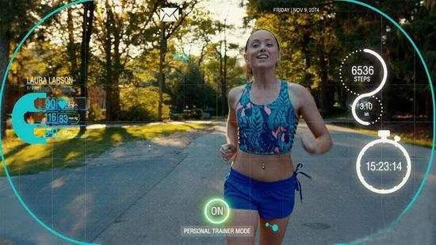
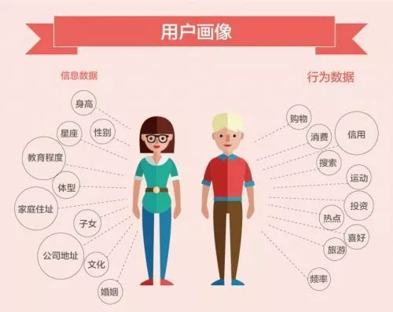
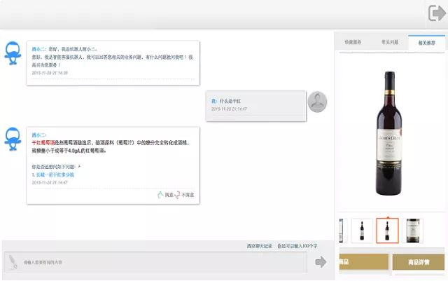
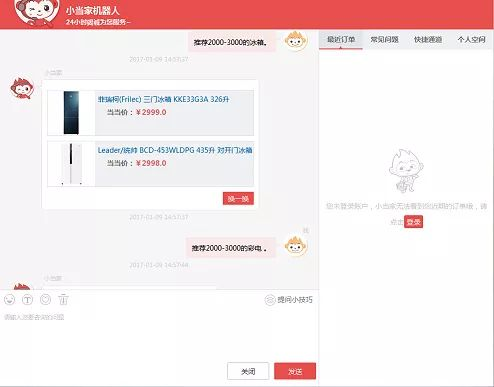

微信扫一扫
关注该公众号


这是美剧《企业未来》中出现过的类似场景，剧中的故事发生在2062年，而现如今，机器人智能推荐营销的场景却已经比编剧设想的要提前出现在我们的生活中。
 美剧《企业未来》剧照如今，人工智能越来越火，而人工智能与大数据的结合也将赋能营销，让营销行为越来越读懂消费者的心思和需求，实现与消费者的互动。过去，无论多么棒的广告创意，消费者永远只是个旁观者。人工智能和大数据的存在则可以准确捕捉到消费者的消费习惯、消费喜好等信息，并根据这些准确告诉他，他需要的信息在哪里。由于每个人看到的效果不同，广告是为消费者个人量身打造的，这也就是我们所说的精准营销。
一、客服机器人精准营销的信息基础
1）多轮对话
任务驱动的多轮对话不是一个简单的自然语言理解加信息检索的过程，而是一个决策过程，需要机器在对话过程中不断根据当前的状态决策下一步应该采取的最优动作（如：提供结果、询问特定限制条件、澄清或确认需求等等）从而最有效地辅助用户完成信息或服务获取的任务。在学术文献中所说的 Spoken Dialogue Systems（SDS）一般特指任务驱动的多轮对话。
用户带着明确的目的而来，希望得到满足特定限制条件的信息或服务，例如：订餐，订票，寻找音乐、电影或某种商品等等。因为用户的需求可以比较复杂，可能需要分多轮进行陈述，用户也可能在对话过程中不断修改或完善自己的需求。此外，当用户陈述的需求不够具体或明确的时候，机器也可以通过询问、澄清或确认来帮助用户找到满意的结果。


客服机器人通过深度神经网络进行会话场景的意图识别，自定义智能地向用户调研相关信息。同时表单信息可以与业务系统打通，直接通过条件筛选出对应答案。
客服机器人通过与用户的多轮对话来收集用户需求、采集用户数据，这是客服机器人精准营销的第一个信息基础。
2）用户画像
用户画像又称用户角色，作为一种勾画目标用户、联系用户诉求与设计方向的有效工具，用户画像在各领域得到了广泛的应用。我们在实际操作的过程中往往会以最为浅显和贴近生活的话语将用户的属性、行为轨迹与期待联结起来。
用户画像可以使产品的服务对象和营销对象更加聚焦、更加专注。在行业里，我们经常看到这样一种现象：做一个产品，期望目标用户能涵盖所有人，男人女人、老人小孩、专家小白、文青屌丝...... 通常这样的产品会走向消亡，因为每一个产品都是为特定目标群的共同标准而服务的，目标群的基数越大，这个标准就越低。换言之， 如果这个产品是适合每一个人的，那么其实它是为最低的标准服务的，这样的产品要么毫无特色，要么过于简陋。
 用户画像示意图纵览成功的产品案例，他们服务的目标用户通常都非常清晰、特征明显，体现在产品上就是专注、极致、能解决核心问题。比如苹果的产品，一直都为有态度、追求卓越品质、特立独行的人群服务，赢得了很好的用户口碑及市场份额。又比如豆瓣，将自身用户群体定位为文艺青年，专注文艺事业十多年，用户粘性非常高，文艺青年在这里能找到知音和归宿。给特定群体提供专注的服务或营销要比给广泛人群提供低标准的服务或营销更接近成功，因此，用户画像是客服机器人精准营销的第二个信息基础。
3）应用场景信息
场景化思维注重用户体验，产品设计或营销方式更多围绕用户的实际情况和消费习惯展开，达成商家与消费者之间的黏性互动。这突破了以往商品一旦被生产和售卖，商业行为即告结束的局限。“场景”无处不在，特定的时间、地点和任务存在特定的场景关系，延伸到商业领域便会引发不同的消费市场。市场永远追随时代变化，场景不同，策略选择也有不同，在现如今的人工智能和大数据的时代，应用场景显得更为重要。因此，应用场景信息构成了客服机器人精准营销的第三个信息基础。
二、客服机器人的精准营销方式
1）寒暄推荐：在与用户寒暄的同时，推荐相关业务
很多人在遇到人工推销产品的时候，都会显得比较反感，但是当他跟机器人打个招呼，接着，一个卖萌的机器人向他进行推荐的时候，人们反而会降低了抵触情绪，如果推荐的正是他的兴趣所在那将更加受到欢迎。
2）互动营销活动：利用机器人的互动进行营销推广活动
机器人与用户智能地进行交互，通过问答的互动形式，开展营销推广活动，比单纯的抽奖更有乐趣，收获了用户的巨大追捧，同时培养了用户对机器人的认可与互动习惯。
下图的小如送电影票活动让如家微信小如日交互次数增长近10倍，活动结束后也比之前增长近3倍。
3）相关业务推荐：拓展知识服务、宣传核心业务
机器人在回答用户问题的同时，通过语义相关度的计算，自动推送相关的业务介绍。后台也支持管理员人工配置推荐的相关核心业务。当用户在表达某个咨询需求时，往往代表了潜在的该类业务消费需求，抓住用户主动表达这个需求的每一次机会，说不定就成交了。
 相关业务推荐场景4）智能条件筛选：通过所包含条件反向检索
访客表述需求，包含多个条件，机器人可以通过语义转换，自动地筛选出符合条件的产品，根据用户的需求给用户精准推荐相关的产品。
 云问为当当网打造的智能客服5）通用热点链接：设置热点业务词指向
对于一些热点的业务词汇，可以设置通用的文字链接，机器人的回答中若含有这些词汇，会自动转换成超链接，引导用户直接点击了解。可以设置术语、产品名称等类型的词汇为文字链接。
6）产品推荐页面：提及产品时进行智能推荐
当用户的表述中有购买商品的意图时，智能机器人会自动同步推荐相关产品。访客的咨询就会变得非常具象，购买转化率也会变得非常高。
基于上述这些精准营销的方式，云问智能客服机器人在后台人性化地设置了营销列表功能，在列表中可查看到每种营销被机器人推送的次数以及访客点击浏览的次数，同时管理员可通过是否启用按钮暂时设置某个营销生效与否。可通过浏览次数、推送次数、创建时间等条件筛选营销内容。
此外，营销列表可将机器人推送次数和访客浏览次数通过饼图的方式形象化地展示出来，让企业的营销分析更加直观。
三、客服机器人精准营销的价值
在市场越来越细分的商业社会中，客户面对庞大的信息海洋，最终只会选择自己最感兴趣的那一个打开，然而对于企业来说，这正是机会。基于人工智能和大数据下的客服机器人精准营销，比一般形式的精准营销具有更加智能、更加科学的特点，是未来企业营销发展的一个趋势。
— End —